Winter B.l.u.e.s @ Dec 17, 2007
冬天的感觉到来了。
冬天、忙碌使内心安静。
冬天的感觉到来了。
冬天、忙碌使内心安静。
Michael提供的连接“新欧西藏行” ，这位大侠用卫星电话，租加油车拉了11桶油跟着，有米。来去一共将近1万公里，回来换了三清，好好打整一下还是新车。底盘油箱被碰瘪了，备胎下的塑料盘挂花，其它一切都没问题。
看了后很兴奋，什么时候能开着我的新O去西藏呢？假期假期，至少20天的假期才能开车去西藏转一小圈。看来时常扎堆是有必要的，不然不会知道“砂石路不该用四驱“lock” ，应留在脱困时用，四驱“lock”时，速度应该低于10公里/小时。
WAR, between Jet Li and Jason Statham 昨晚看了李连杰的动作片 “WAR”《游侠》，有点像亚洲的《教父》，和他唱对手戏的是 Jason Statham。这个Jason就是演《非常人贩》I、II，及宝马和奥迪的一系列短片式的广告。李连杰驾驶的那辆车开始以为是GTR，后来才看清是SPYKER，真酷！
试想一下，当我们拿着行李，独自一人踏上完全陌生的土地，且这个地方大多数人不说英语也不说我们的母语，随之耳朵和嘴巴失去功能，这种情形下我们会是什么样的感受？
当我们走进1912街区，那个金发碧眼擦肩而过的高大男孩友好而腼腆地朝我们微笑，在他身上异乡客的孤独感强烈袭来。和那个lonely的男生相比，法国来的ISBELLA状况算是不错的。至少旅行计划中的某几个城市有人接待。很难体会和想象当周围有些人百般炫耀并得意于自己手上拥有的那点物质，而一些外国人却辞去工作，有的甚至辞去相当不错的工作独自一人旅行的生活，虽然她的旅行不过短短一个月。他们是不是只想着眼前，只考虑现在的需要？大多数中国人求稳求收入，感受和需要却在其次，如果我们的政府能提供更好的社会福利，安全感也许会饱满许多？
当有人来访时我会对南京的白天和黑夜失望，实在没什么可推荐的。生活其中却有小滋味，游客们自然是体会不到，所以不要到南京来旅游。夜晚对于初来乍道的客人除了1912这个表情千变百态的浑浊之地，似乎没有别的地方可去了？这座城市标志性的夜生活仅于此，止于此。

乘一夜火车的记忆应该是12年前。
这次出差到工厂，厂长的笑话多，另四个同事性格开朗，客人幽默，笑声不断。多些这样的出差，提高工作效率。有个情景要讲一下，客人吃饭时不经意打了个嗝，慌乱中说了sorry。周围好些人打嗝震天动地且逍遥大方，解释起来也许还是环境？！记得有个朋友说，她女友的BF是德国人，刚来中国看到很多人随地吐痰很是不解，过了一年这位德国人也开始随地吐痰了。当然，要是将随地吐痰和随便打嗝放在《泰塔尼克号》上那就是反现实叛逆的行为艺术，对吗？
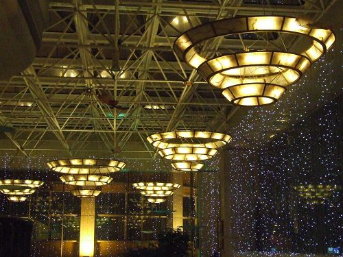
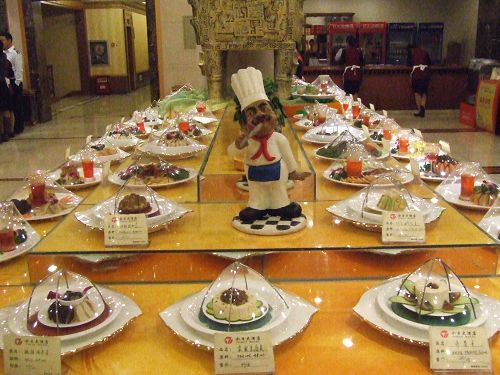

虎子穿着黑色的瘦身西装，黑色长裤，白色体恤，分别十多年后第三次见到他，这次和去年一样来南京参加“靓妆频道”的模特大赛。听说前阵子和小珂在德国演出，明年1月到4月间还会在德国，希望我能在春节的时候做个计划去德国，可以省去住宿费用，呵呵~我们公司可怜的假期连去趟西藏都不够，10天假要分开休，假期怎么休是要听组织的话的。
虎子组了一个乐队叫“宠物同谋”，主唱helen是美籍华人，USC的高才生，喜爱重摇滚乐，但是爵士乐，流行乐，民谣曲风都可涉猎。同时，她也是MTV频道、CCTV9及国际广播电台的主持人。另外的成员还包括乐队的灵魂之一来自北京最具舞台效果的乐队烦人鼓手张蔚。据说主唱颇有嬉皮风格。嬉皮文化被看作是一个对常人社会有破坏性威胁的非主流文化。今天，对待它们的态度就友善多了，而且还夹杂着一些怀旧色彩，或许这个词还是指那些“时髦的”人？今天仍然可以寻觅到嬉皮的身影，但必须仔细去找。在阿姆斯特丹的咖啡馆里、在果阿的海滩上，或在深山里的艺术家聚集地中都可以找到嬉皮。他们不再被人们警惕为危险或破坏分子，而是一个时代观念混乱、稍显荒唐的群体。而与一些今天的亚文化群相比，嬉皮文化似乎是相当积极向上且温顺的。毕竟，他们只是一群过度理想化的年轻人，脑中充斥着缔造更美好世界的浪漫想法而已。
从2005年虎子出了《两个人的旅行》专辑之后，到现在都没出专辑，希望他能抽出时间来做自己的音乐，期待他的第五张音乐专辑。
这一年的确忙，最明显的是居然到现在没有用休假，只一件事情便挤占了所有业余时间。可这让我感到兴奋，这是我喜爱的事情。工作却恰恰相反，泯灭人性和对生活的热情。每次见到这些老朋友，我会质疑自己的人生选择，明明是自由的灵魂却生硬的被装在一个袋子里。法国思想家帕斯尔说“人只是一只芦苇,是宇宙间最脆弱的东西。但人是一只会思想的芦苇”。人的生命是脆弱的,宇宙间任何一件东西都能置人于死地,然而人却成了万物的主宰,这正是因为人有一颗会思想的灵魂,人因为思想而高贵。然而当人的思想被关在一个笼子里而失去了飞翔的自由时,人还是“人”吗？
“你应该流浪几年”虎子说。
餐厅里的茶和调味品
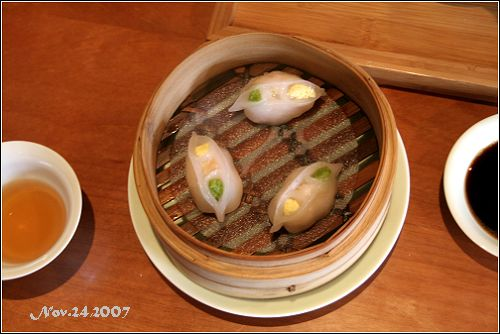

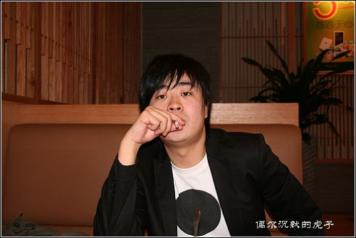
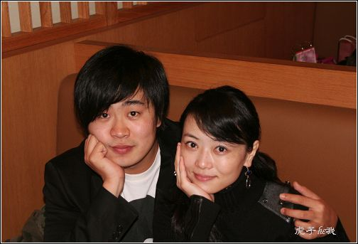
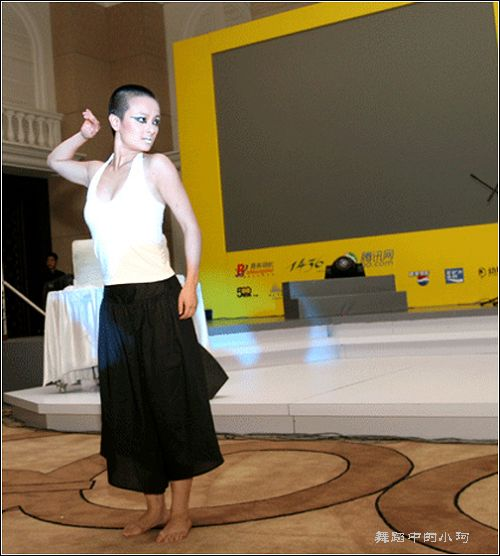
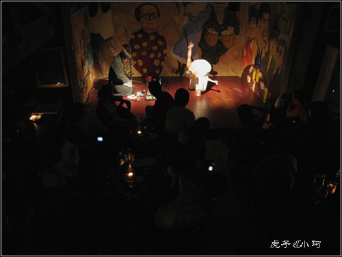

两年前开始听Linkin Park的碟，虽然从开始接受到喜欢上Linkin Park过程不太长，可是到了现场才知道自己连个伪歌迷都算不上，音乐刚刚响起时便是潮水般响亮跟唱。“温故”的歌占了80%，即便新歌还是有很多人能清晰的唱出歌词。基本上都是年轻人，疯狂而有序，除了位置上的死角，几乎场内“站”满了人。
一个多月前在网上预定了演唱会的票，那时价格适中的600、800元票价基本售空，买了400元价位的票，选了挨着600元区域的座位号。最贵的票价是1600元，最便宜的100元。还好，票价并不比国内歌星开演唱会的高，不知道欧美看场这样的演出票价多少？
目前为止看过三次摇滚现场演唱会，一次是92年前后吧，《唐朝》乐队到南京演出，去看的人大多是学生。另一次好象是95年，忘了是哪个品牌的“face to face”活动，在南航看的北京的一个摇滚乐队。Linkin Park是第三次。摇滚演唱会总是沸腾的，世界上最吵的声音莫过于11月18日晚的上海虹口足球场。遗憾的是Linkin Park只演出了一个多小时，前面不知国内哪个摇滚乐队用了一个小时来热场，与Linkin Park朴素的外型相比，国内这支乐队的舞台表演有点马戏团的感觉。这次演唱会由“雪弗莱”出资邀请，会场外面具有优势的停车点都留给了雪弗莱车友，平时不起眼的小车，这个晚上也颇神气呢。
续：这场演唱会之后仍然意犹未尽，反复听碟子外又看了他们2004年在Texas的现场，整个儿演完1：06，看来摇滚是既需要体力又需要激情的演出，Linkin Park不完全是摇滚，其中也加入饶舌、DJ等元素，使得他们的作品吸引更多人。2000、2001年Linkin Park刚出道就红了，可是在2005年才邂逅Linkin Park。音乐是储藏记忆的盒子，可以进行时光穿梭。

Biography by MacKenzie Wilson
Old-school hip-hop, traditional classic rock, and spooling electronic vibes were the initial factors behind the building of the alternative metal quintet Linkin Park. The band's Southern Californian musical roots were also an underlying basis, for drummer Rob Bourdon, guitarist Brad Delson, and MC/vocalist Mike Shinoda formed a tight friendship while still in high school. Shortly after graduation, art student and DJ Joseph Hahn hooked up with bassist Dave "Phoenix" Farrell and Shinoda for the band Xero. Hybrid Theory came later, but the band opted on the name Linkin Park when singer Chester Bennington was the last piece added to the band in 1999. Soon the band became a noticeable face at the Whisky as well as favorites in and around Los Angeles. Zomba Music's Jeff Blue was one of the few who didn't turn the band down for a contract at the turn of the millennium — Linkin Park signed to Warner Bros. after being turned down three times in late 1999 and got to work on their debut album. Taking a piece from their past, they named the album Hybrid Theory. It was released in fall 2000 and it showcased their likes for fellow alternative acts such as the Deftones, the Roots, Aphex Twin, and Nine Inch Nails. The Dust Brothers also collaborated on the record, as well as producer Don Gilmore (Pearl Jam, Eve 6, Tracy Bonham). Singles such as "Crawling" and "One Step Closer" were massive radio hits and video favorites among the TRL crowd on MTV. Joint tours with Family Values and the Project: Revolution Tour with Cypress Hill led the band to play 324 shows in 2001. Linkin Park was in demand. Come January 2002, Hybrid Theory received three Grammy nominations, for Best Rock Album and Best New Artist. A month later, Linkin Park walked away with an award for Best Hard Rock Performance for "Crawling." They spent the remainder of the year holed up in the studio, again working with Gilmore, recording a follow-up to their eight-times-platinum debut Hybrid Theory.
Linkin Park's sophomore effort, Meteora, was released in March 2003; the first single, "Somewhere I Belong," was an instant hit. The second annual Projekt Revolution tour got underway in spring 2003 with Linkin Park joining Mudvayne, Xzibit, and Blindside; Summer Sanitarium dates with Metallica, Limp Bizkit, Mudvayne, and the Deftones followed in July and August. Results of the latter appeared by the end of the year on Live in Texas. In late 2004, Linkin Park embarked on their most ambitious project yet: Collision Course, a collaboration with king-of-the-mountain rapper Jay-Z, which introduced the commercial world to the concept of mash-ups (remixes that sample heavily from at least two popular songs). Jay-Z also encouraged co-founder Mike Shinoda to explore the possibilities of a solo hip-hop project. He did, dubbed the project Fort Minor, and released the album The Rising Tied in 2005 with Jay-Z as executive producer. The group came back together in 2006 and began work on their next album. With Shinoda and Rick Rubin (Run-D.M.C., Red Hot Chili Peppers, Johnny Cash) sharing the production credit, Minutes to Midnight arrived in 2007.

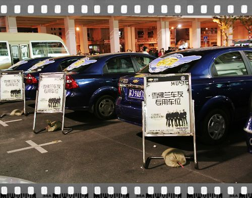


某日回家，电梯间左边是新蒙迪欧广告画，右边是珍珠泉的别墅。正对面却是留白的广告栏，一般正中央也会有花花绿绿的广告画。这次留白却也耐人寻味，艺术感颇强。
梢后几日，我妈问：“电梯间中央的广告栏是否留白？”原来新换广告画当天她便向物业提意见，说中间那画上的男人吐着长长的舌头，上面一个白色小人形，晚上回家的业主看到会不会很恐怖？当天，物业抽走了那张广告：曼妥思夹心无糖口香糖 。不论是不是谣言，请不要与可乐一起食用曼妥思薄荷糖。
越来越喜欢养植物，和爸爸去花卉园逛。
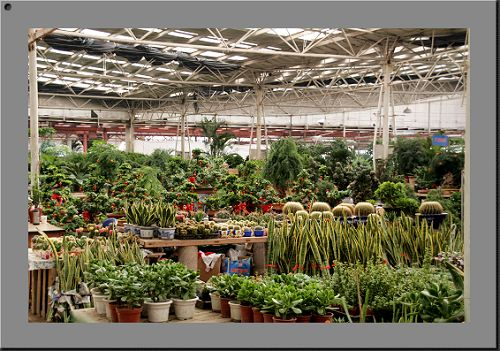
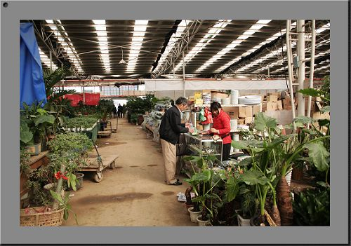
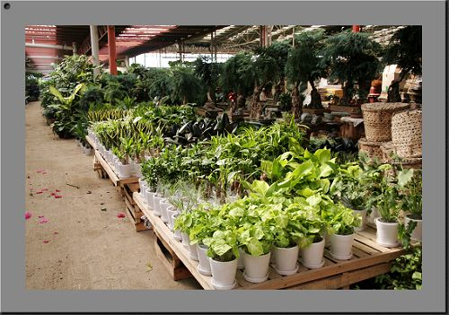
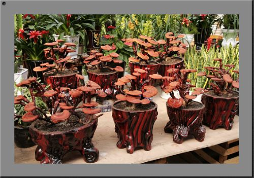
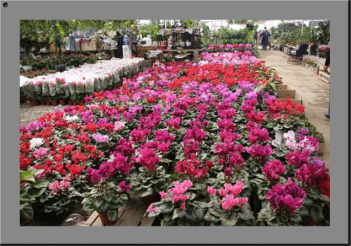
8:30出门。
大雾，高架出口塞车，转从其它路口下，还是堵。
大雾天气边开车边拍照很crazy，和前面那辆laibao相比却小巫见大巫，人家从慢车道转快车道，中间横一路牙，laibao骑上面轰了几十秒油门才过去，估计那时换了我也顾不了车咯，抢路要紧~
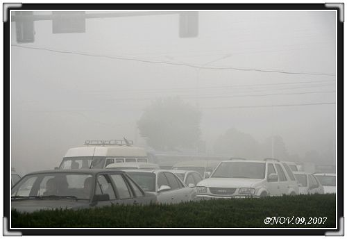
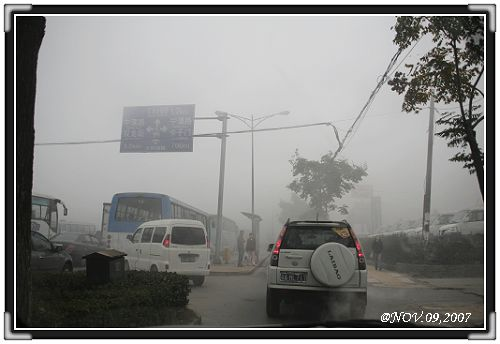
A：现在真害怕别人喜欢我。
Z：真是应了那句“旱的旱死，涝的涝死”。
G：人家“旱”的心理能平衡么？！